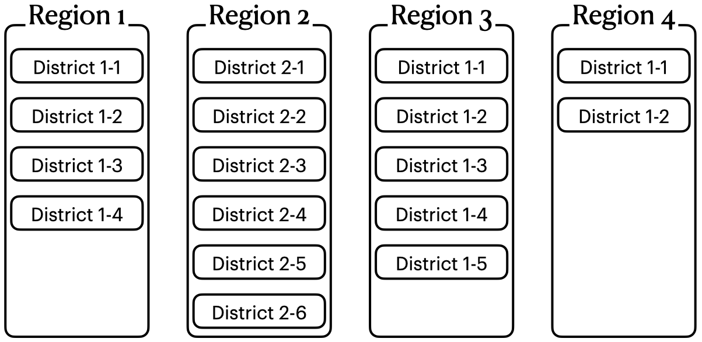
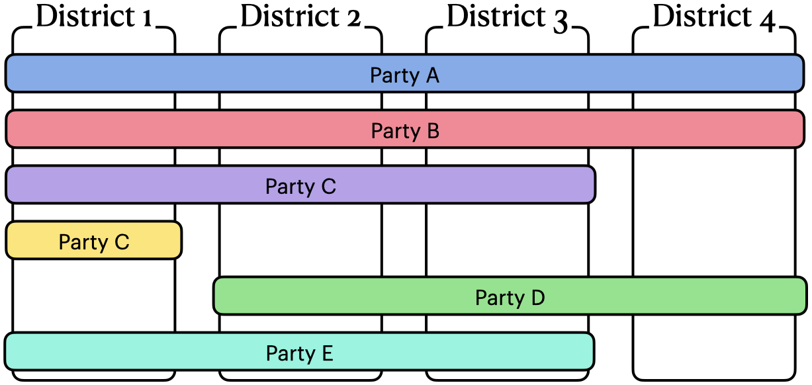
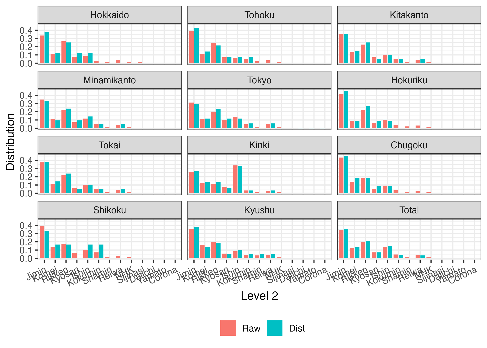

library(tidyverse)
library(PRcalc)Import Dataset
In this section, we introduce how to convert tabular data that has already been allocated into Prcalc class objects.
Nested and spanned structure
{PRcalc} supports two types of data structures—“nested” and “span”. This represents the relationship between level 1 and level 2, where level 1 means state or region and level 2 means district or party. For example, if level 1 is state and level 2 is political party, the party would nominate candidates to multiple states. We describe this as “level 2 spans level 1”. On the other hand, if the constituency is within a state, we call it “level 2 nested in level 1”. The following figure shows the difference between “nested” and “span” structure. In {PRcalc}, default is "nestd".


Example 1: Spanned structure
Load sample dataset, jp_lower_2021_result.
data("jp_lower_2021_result")
jp_lower_2021_result# A tibble: 103 × 4
Party Pref Votes Seats
<chr> <chr> <int> <dbl>
1 Jimin Hokkaido 863300 3
2 Jimin Tohoku 1628233 6
3 Jimin Kitakanto 2172065 7
4 Jimin Minamikanto 2590787 7
5 Jimin Tokyo 2000084 5
6 Jimin Hokuriku 1468380 5
7 Jimin Tokai 2515841 8
8 Jimin Kinki 2407699 8
9 Jimin Chugoku 1352723 5
10 Jimin Shikoku 664805 2
# ℹ 93 more rowsThis dataset contains the number of votes and seats won by each party in each prefecture. For example, Jimin party received 863300 votes and won 3 seat in Hokkaido.
Level 1 (l1) here is "Pref" (prefectures) and level 2 (l2) is "Party" (parties). Also, p (before conversion) and q (after conversion) are the "Votes" (number of votes) and "Seats" (seats), respectively. Since the parties are across prefectures, the type is specified as "span".
obj1 <- as_prcalc(jp_lower_2021_result,
l1 = "Pref",
l2 = "Party",
p = "Votes",
q = "Seats",
type = "span")
obj1Raw:
Level2 Hokkaido Tohoku Kitakanto Minamikanto Tokyo Hokuriku Tokai
1 Jimin 863300 1628233 2172065 2590787 2000084 1468380 2515841
2 Komei 294371 456287 823930 850667 715450 322535 784976
3 Rikken 682913 991505 1391149 1651562 1293281 773076 1485947
4 Kyosan 207189 292830 444115 534493 670340 225551 408606
5 Ishin 215344 258690 617531 863897 858577 361476 694630
6 Kokumin 73621 195754 298056 384482 306180 133600 382734
7 Shamin 41248 101442 97963 124447 92995 71185 84220
8 Reiwa 102086 143265 239592 302675 360387 111281 273208
9 NHK 42916 52664 87702 111298 92353 43529 98238
10 Sijinasi 46142 0 0 0 0 0 0
11 Daiichi 0 0 0 0 33661 0 0
12 Yamato 0 0 0 0 16970 0 0
13 Corona 0 0 0 0 6620 0 0
Kinki Chugoku Shikoku Kyushu Total
1 2407699 1352723 664805 2250966 19914883
2 1155683 436220 233407 1040756 7114282
3 1090666 573324 291871 1266801 11492095
4 736156 173117 108021 365658 4166076
5 3180219 286302 173826 540338 8050830
6 303480 113899 122082 279509 2593397
7 100980 52638 30249 221221 1018588
8 292483 94446 52941 243284 2215648
9 111539 36758 21285 98506 796788
10 0 0 0 0 46142
11 0 0 0 0 33661
12 0 0 0 0 16970
13 0 0 0 0 6620
Result:
Level2 Hokkaido Tohoku Kitakanto Minamikanto Tokyo Hokuriku Tokai Kinki
1 Jimin 3 6 7 7 5 5 8 8
2 Komei 1 2 3 2 2 1 3 4
3 Rikken 2 3 5 5 4 3 5 4
4 Kyosan 1 1 1 2 2 1 1 2
5 Ishin 1 1 2 3 2 1 2 10
6 Kokumin 0 1 1 1 1 0 1 1
7 Shamin 0 0 0 0 0 0 0 0
8 Reiwa 0 0 1 1 1 0 1 1
9 NHK 0 0 0 0 0 0 0 0
10 Sijinasi 0 0 0 0 0 0 0 0
11 Daiichi 0 0 0 0 0 0 0 0
12 Yamato 0 0 0 0 0 0 0 0
13 Corona 0 0 0 0 0 0 0 0
Chugoku Shikoku Kyushu Total
1 5 2 8 64
2 2 1 3 24
3 2 1 4 38
4 1 0 1 13
5 1 1 2 26
6 0 1 1 8
7 0 0 1 1
8 0 0 1 6
9 0 0 0 0
10 0 0 0 0
11 0 0 0 0
12 0 0 0 0
13 0 0 0 0
Parameters:
Allocation method:
Extra parameter:
Threshold:
Magnitude:
Hokkaido Tohoku Kitakanto Minamikanto Tokyo Hokuriku
8 14 20 21 17 11
Tokai Kinki Chugoku Shikoku Kyushu
21 30 11 6 21 If you have a dataset that has already been calculated, a PRcalc class object can be created instead of using prcalc() function.
plot(obj1,
subset_p = c("Jimin", "Komei", "Rikken",
"Kyosan", "Ishin", "Kokumin"),
facet_col = 3,
angle = 25)
Example 2: Nested structure
A sample dataset au_district_2010 contains information on the number of electoral district constants. In this case, each constituency ("district") is nested in a region ("region").
data("au_district_2010")
au_district_2010 region district electorates magnitude
1 Australian Capital Territory CANBERRA 124294 1
2 Australian Capital Territory FRASER 123647 1
3 New South Wales BANKS 98742 1
4 New South Wales BARTON 95231 1
5 New South Wales BENNELONG 98915 1
6 New South Wales BEROWRA 95124 1
7 New South Wales BLAXLAND 95362 1
8 New South Wales BRADFIELD 97255 1
9 New South Wales CALARE 98463 1
10 New South Wales CHARLTON 94474 1
11 New South Wales CHIFLEY 97605 1
12 New South Wales COOK 100733 1
13 New South Wales COWPER 94654 1
14 New South Wales CUNNINGHAM 100643 1
15 New South Wales DOBELL 93646 1
16 New South Wales EDEN-MONARO 96465 1
17 New South Wales FARRER 94026 1
18 New South Wales FOWLER 95564 1
19 New South Wales GILMORE 96340 1
20 New South Wales GRAYNDLER 98112 1
21 New South Wales GREENWAY 93837 1
22 New South Wales HUGHES 97998 1
23 New South Wales HUME 97719 1
24 New South Wales HUNTER 91523 1
25 New South Wales KINGSFORD SMITH 97730 1
26 New South Wales LINDSAY 95975 1
27 New South Wales LYNE 92535 1
28 New South Wales MACARTHUR 90040 1
29 New South Wales MACKELLAR 98520 1
30 New South Wales MACQUARIE 97536 1
31 New South Wales MCMAHON 96061 1
32 New South Wales MITCHELL 93573 1
33 New South Wales NEW ENGLAND 99616 1
34 New South Wales NEWCASTLE 92855 1
35 New South Wales NORTH SYDNEY 97578 1
36 New South Wales PAGE 94336 1
37 New South Wales PARKES 100170 1
38 New South Wales PARRAMATTA 93999 1
39 New South Wales PATERSON 92140 1
40 New South Wales REID 95878 1
41 New South Wales RICHMOND 92391 1
42 New South Wales RIVERINA 98584 1
43 New South Wales ROBERTSON 96588 1
44 New South Wales SHORTLAND 94224 1
45 New South Wales SYDNEY 95286 1
46 New South Wales THROSBY 95871 1
47 New South Wales WARRINGAH 96708 1
48 New South Wales WATSON 97761 1
49 New South Wales WENTWORTH 101446 1
50 New South Wales WERRIWA 90963 1
51 Northern Territory LINGIARI 61168 1
52 Northern Territory SOLOMON 59891 1
53 Queensland BLAIR 83045 1
54 Queensland BONNER 92661 1
55 Queensland BOWMAN 91856 1
56 Queensland BRISBANE 92197 1
57 Queensland CAPRICORNIA 91961 1
58 Queensland DAWSON 94533 1
59 Queensland DICKSON 90130 1
60 Queensland FADDEN 85225 1
61 Queensland FAIRFAX 89726 1
62 Queensland FISHER 83724 1
63 Queensland FLYNN 91349 1
64 Queensland FORDE 82535 1
65 Queensland GRIFFITH 92573 1
66 Queensland GROOM 93364 1
67 Queensland HERBERT 91044 1
68 Queensland HINKLER 91371 1
69 Queensland KENNEDY 94434 1
70 Queensland LEICHHARDT 93113 1
71 Queensland LILLEY 97407 1
72 Queensland LONGMAN 87046 1
73 Queensland MARANOA 97892 1
74 Queensland MCPHERSON 90139 1
75 Queensland MONCRIEFF 89150 1
76 Queensland MORETON 92730 1
77 Queensland OXLEY 82768 1
78 Queensland PETRIE 86651 1
79 Queensland RANKIN 94594 1
80 Queensland RYAN 98239 1
81 Queensland WIDE BAY 92607 1
82 Queensland WRIGHT 85296 1
83 South Australia ADELAIDE 98519 1
84 South Australia BARKER 104845 1
85 South Australia BOOTHBY 97860 1
86 South Australia GREY 99775 1
87 South Australia HINDMARSH 100216 1
88 South Australia KINGSTON 102281 1
89 South Australia MAKIN 96233 1
90 South Australia MAYO 101510 1
91 South Australia PORT ADELAIDE 104280 1
92 South Australia STURT 99023 1
93 South Australia WAKEFIELD 100156 1
94 Tasmania BASS 71686 1
95 Tasmania BRADDON 71576 1
96 Tasmania DENISON 71350 1
97 Tasmania FRANKLIN 71122 1
98 Tasmania LYONS 72875 1
99 Victoria ASTON 93447 1
100 Victoria BALLARAT 97756 1
101 Victoria BATMAN 89131 1
102 Victoria BENDIGO 100610 1
103 Victoria BRUCE 88124 1
104 Victoria CALWELL 101342 1
105 Victoria CASEY 92317 1
106 Victoria CHISHOLM 86220 1
107 Victoria CORANGAMITE 101512 1
108 Victoria CORIO 91924 1
109 Victoria DEAKIN 87710 1
110 Victoria DUNKLEY 95299 1
111 Victoria FLINDERS 100852 1
112 Victoria GELLIBRAND 95571 1
113 Victoria GIPPSLAND 97521 1
114 Victoria GOLDSTEIN 93918 1
115 Victoria GORTON 113675 1
116 Victoria HIGGINS 90409 1
117 Victoria HOLT 108891 1
118 Victoria HOTHAM 89529 1
119 Victoria INDI 92914 1
120 Victoria ISAACS 102769 1
121 Victoria JAGAJAGA 95146 1
122 Victoria KOOYONG 89626 1
123 Victoria LA TROBE 97956 1
124 Victoria LALOR 116976 1
125 Victoria MALLEE 89824 1
126 Victoria MARIBYRNONG 88413 1
127 Victoria MCEWEN 115811 1
128 Victoria MCMILLAN 93285 1
129 Victoria MELBOURNE 102881 1
130 Victoria MELBOURNE PORTS 97766 1
131 Victoria MENZIES 90931 1
132 Victoria MURRAY 90182 1
133 Victoria SCULLIN 90811 1
134 Victoria WANNON 92236 1
135 Victoria WILLS 98588 1
136 Western Australia BRAND 88186 1
137 Western Australia CANNING 90079 1
138 Western Australia COWAN 89536 1
139 Western Australia CURTIN 90430 1
140 Western Australia DURACK 85811 1
141 Western Australia FORREST 89649 1
142 Western Australia FREMANTLE 93378 1
143 Western Australia HASLUCK 93930 1
144 Western Australia MOORE 92340 1
145 Western Australia O'CONNOR 92902 1
146 Western Australia PEARCE 89562 1
147 Western Australia PERTH 91907 1
148 Western Australia STIRLING 91775 1
149 Western Australia SWAN 90817 1
150 Western Australia TANGNEY 92232 1The number before conversion (p) is the number of electorates ("electorates"); the number after conversion (q) is the number of seats ("magnitude"). However, if all q are 1, as in this example, the q argument can be omitted.
obj2 <- as_prcalc(au_district_2010,
l1 = "region",
l2 = "district",
p = "electorates",
q = "magnitude", # omittable
type = "nested")
obj2Raw:
Level2 Australian Capital Territory New South Wales Northern Territory
1 1 124294 98742 61168
2 2 123647 95231 59891
3 3 0 98915 0
4 4 0 95124 0
5 5 0 95362 0
6 6 0 97255 0
7 7 0 98463 0
8 8 0 94474 0
9 9 0 97605 0
10 10 0 100733 0
11 11 0 94654 0
12 12 0 100643 0
13 13 0 93646 0
14 14 0 96465 0
15 15 0 94026 0
16 16 0 95564 0
17 17 0 96340 0
18 18 0 98112 0
19 19 0 93837 0
20 20 0 97998 0
21 21 0 97719 0
22 22 0 91523 0
23 23 0 97730 0
24 24 0 95975 0
25 25 0 92535 0
26 26 0 90040 0
27 27 0 98520 0
28 28 0 97536 0
29 29 0 96061 0
30 30 0 93573 0
31 31 0 99616 0
32 32 0 92855 0
33 33 0 97578 0
34 34 0 94336 0
35 35 0 100170 0
36 36 0 93999 0
37 37 0 92140 0
38 38 0 95878 0
39 39 0 92391 0
40 40 0 98584 0
41 41 0 96588 0
42 42 0 94224 0
43 43 0 95286 0
44 44 0 95871 0
45 45 0 96708 0
46 46 0 97761 0
47 47 0 101446 0
48 48 0 90963 0
Queensland South Australia Tasmania Victoria Western Australia Total
1 83045 98519 71686 93447 88186 719087
2 92661 104845 71576 97756 90079 735686
3 91856 97860 71350 89131 89536 538648
4 92197 99775 71122 100610 90430 549258
5 91961 100216 72875 88124 85811 534349
6 94533 102281 0 101342 89649 485060
7 90130 96233 0 92317 93378 470521
8 85225 101510 0 86220 93930 461359
9 89726 104280 0 101512 92340 485463
10 83724 99023 0 91924 92902 468306
11 91349 100156 0 87710 89562 463431
12 82535 0 0 95299 91907 370384
13 92573 0 0 100852 91775 378846
14 93364 0 0 95571 90817 376217
15 91044 0 0 97521 92232 374823
16 91371 0 0 93918 0 280853
17 94434 0 0 113675 0 304449
18 93113 0 0 90409 0 281634
19 97407 0 0 108891 0 300135
20 87046 0 0 89529 0 274573
21 97892 0 0 92914 0 288525
22 90139 0 0 102769 0 284431
23 89150 0 0 95146 0 282026
24 92730 0 0 89626 0 278331
25 82768 0 0 97956 0 273259
26 86651 0 0 116976 0 293667
27 94594 0 0 89824 0 282938
28 98239 0 0 88413 0 284188
29 92607 0 0 115811 0 304479
30 85296 0 0 93285 0 272154
31 0 0 0 102881 0 202497
32 0 0 0 97766 0 190621
33 0 0 0 90931 0 188509
34 0 0 0 90182 0 184518
35 0 0 0 90811 0 190981
36 0 0 0 92236 0 186235
37 0 0 0 98588 0 190728
38 0 0 0 0 0 95878
39 0 0 0 0 0 92391
40 0 0 0 0 0 98584
41 0 0 0 0 0 96588
42 0 0 0 0 0 94224
43 0 0 0 0 0 95286
44 0 0 0 0 0 95871
45 0 0 0 0 0 96708
46 0 0 0 0 0 97761
47 0 0 0 0 0 101446
48 0 0 0 0 0 90963
Result:
Level2 Australian Capital Territory New South Wales Northern Territory
1 1 1 1 1
2 2 1 1 1
3 3 0 1 0
4 4 0 1 0
5 5 0 1 0
6 6 0 1 0
7 7 0 1 0
8 8 0 1 0
9 9 0 1 0
10 10 0 1 0
11 11 0 1 0
12 12 0 1 0
13 13 0 1 0
14 14 0 1 0
15 15 0 1 0
16 16 0 1 0
17 17 0 1 0
18 18 0 1 0
19 19 0 1 0
20 20 0 1 0
21 21 0 1 0
22 22 0 1 0
23 23 0 1 0
24 24 0 1 0
25 25 0 1 0
26 26 0 1 0
27 27 0 1 0
28 28 0 1 0
29 29 0 1 0
30 30 0 1 0
31 31 0 1 0
32 32 0 1 0
33 33 0 1 0
34 34 0 1 0
35 35 0 1 0
36 36 0 1 0
37 37 0 1 0
38 38 0 1 0
39 39 0 1 0
40 40 0 1 0
41 41 0 1 0
42 42 0 1 0
43 43 0 1 0
44 44 0 1 0
45 45 0 1 0
46 46 0 1 0
47 47 0 1 0
48 48 0 1 0
Queensland South Australia Tasmania Victoria Western Australia Total
1 1 1 1 1 1 8
2 1 1 1 1 1 8
3 1 1 1 1 1 6
4 1 1 1 1 1 6
5 1 1 1 1 1 6
6 1 1 0 1 1 5
7 1 1 0 1 1 5
8 1 1 0 1 1 5
9 1 1 0 1 1 5
10 1 1 0 1 1 5
11 1 1 0 1 1 5
12 1 0 0 1 1 4
13 1 0 0 1 1 4
14 1 0 0 1 1 4
15 1 0 0 1 1 4
16 1 0 0 1 0 3
17 1 0 0 1 0 3
18 1 0 0 1 0 3
19 1 0 0 1 0 3
20 1 0 0 1 0 3
21 1 0 0 1 0 3
22 1 0 0 1 0 3
23 1 0 0 1 0 3
24 1 0 0 1 0 3
25 1 0 0 1 0 3
26 1 0 0 1 0 3
27 1 0 0 1 0 3
28 1 0 0 1 0 3
29 1 0 0 1 0 3
30 1 0 0 1 0 3
31 0 0 0 1 0 2
32 0 0 0 1 0 2
33 0 0 0 1 0 2
34 0 0 0 1 0 2
35 0 0 0 1 0 2
36 0 0 0 1 0 2
37 0 0 0 1 0 2
38 0 0 0 0 0 1
39 0 0 0 0 0 1
40 0 0 0 0 0 1
41 0 0 0 0 0 1
42 0 0 0 0 0 1
43 0 0 0 0 0 1
44 0 0 0 0 0 1
45 0 0 0 0 0 1
46 0 0 0 0 0 1
47 0 0 0 0 0 1
48 0 0 0 0 0 1
Parameters:
Allocation method:
Extra parameter:
Threshold:
Magnitude:
Australian Capital Territory New South Wales
2 48
Northern Territory Queensland
2 30
South Australia Tasmania
11 5
Victoria Western Australia
37 15 decompose(obj2, alpha = 0, as_disprop = FALSE)alpha = 0
alpha-divergence Reapportionment Redistricting
0.004280586 0.003107794 0.001172792
Note: "alha-divergence" is sum of "Reapportionment" and "Redisticting" terms.Example 3: Using .csv file
With read_prcalc(), you can create a PRcalc class object directly from a .csv file. Sample dataset can be downloaded from here.
# Because default value of `type` is `"district"`, you can omit it.
obj3 <- read_prcalc("../data/sample_dataset.csv",
l1 = "region",
l2 = "district",
p = "electorates",
q = "magnitude")
index(obj3) ID Index Value
1 dhondt D’Hondt 1.054507
2 monroe Monroe 0.005322
3 maxdev Maximum Absolute Deviation 0.002287
4 mm_ratio Max-Min ratio 1.139626
5 rae Rae 0.000523
6 lh Loosemore & Hanby 0.012541
7 grofman Grofman 0.000685
8 lijphart Lijphart 0.001698
9 gallagher Gallagher 0.003814
10 g_gallagher Generalized Gallagher 0.003814
11 gatev Gatev 0.022992
12 ryabtsev Ryabtsev 0.016260
13 szalai Szalai 0.016607
14 w_szalai Weighted Szalai 0.016319
15 ap Aleskerov & Platonov 1.021303
16 gini Gini 0.018644
17 atkinson Atkinson 0.001076
18 sl Sainte-Laguë 0.001055
19 cs Cox & Shugart 1.030364
20 farina Farina 0.035109
21 ortona Ortona 0.008979
22 cd Cosine Dissimilarity 0.000499
23 rr Lebeda’s RR (Mixture D’Hondt) 0.051690
24 arr Lebeda’s ARR 0.001077
25 srr Lebeda’s SRR 0.008936
26 wdrr Lebeda’s WDRR 0.025591
27 kl Kullback-Leibler Surprise 0.000531
28 lr Likelihood Ratio Statistic 0.001069
29 chisq Chi Squared 0.001077
30 hellinger Hellinger Distance 0.011541
31 ad alpha-Divergence 0.000527Example 4: Single level
A sample dataset, br_district_2010 is the Brazilian electoral districts in 2010.
data("br_district_2010")
br_district_2010 district magnitude population
1 Sao Paulo 70 39924091
2 Minas Gerais 53 19159260
3 Rio de Janeiro 46 15180636
4 Bahia 39 13633969
5 Rio Grande do Sul 31 10576758
6 Parana 30 10226737
7 Pernambuco 25 8541250
8 Ceara 22 8450527
9 Maranhao 18 6424340
10 Goias 17 5849105
11 Para 17 7443904
12 Santa Catarina 16 6178603
13 Paraiba 12 3753633
14 Espirito Santo 10 3392775
15 Piaui 10 3086448
16 Alagoas 9 3093994
17 Acre 8 707125
18 Amazonas 8 3350773
19 Amapa 8 648553
20 Distrito Federal 8 2469489
21 Mato Grosso do Sul 8 2404256
22 Mato Grosso 8 2954625
23 Rio Grande do Norte 8 3121451
24 Rondonia 8 1535625
25 Roraima 8 425398
26 Sergipe 8 2036227
27 Tocantins 8 1373551This dataset is a one-dimensional structure, whereas previous examples were two-dimensional structures, such as constituency and party, or region and constituency. In such a one-dimensional structure, l2 can be omitted.
obj4 <- br_district_2010 |>
as_prcalc(l1 = "district",
p = "population",
q = "magnitude",
type = "span")
obj4Raw:
Level2 National
1 Sao Paulo 39924091
2 Minas Gerais 19159260
3 Rio de Janeiro 15180636
4 Bahia 13633969
5 Rio Grande do Sul 10576758
6 Parana 10226737
7 Pernambuco 8541250
8 Ceara 8450527
9 Maranhao 6424340
10 Goias 5849105
11 Para 7443904
12 Santa Catarina 6178603
13 Paraiba 3753633
14 Espirito Santo 3392775
15 Piaui 3086448
16 Alagoas 3093994
17 Acre 707125
18 Amazonas 3350773
19 Amapa 648553
20 Distrito Federal 2469489
21 Mato Grosso do Sul 2404256
22 Mato Grosso 2954625
23 Rio Grande do Norte 3121451
24 Rondonia 1535625
25 Roraima 425398
26 Sergipe 2036227
27 Tocantins 1373551
Result:
Level2 National
1 Sao Paulo 70
2 Minas Gerais 53
3 Rio de Janeiro 46
4 Bahia 39
5 Rio Grande do Sul 31
6 Parana 30
7 Pernambuco 25
8 Ceara 22
9 Maranhao 18
10 Goias 17
11 Para 17
12 Santa Catarina 16
13 Paraiba 12
14 Espirito Santo 10
15 Piaui 10
16 Alagoas 9
17 Acre 8
18 Amazonas 8
19 Amapa 8
20 Distrito Federal 8
21 Mato Grosso do Sul 8
22 Mato Grosso 8
23 Rio Grande do Norte 8
24 Rondonia 8
25 Roraima 8
26 Sergipe 8
27 Tocantins 8
Parameters:
Allocation method:
Extra parameter:
Threshold:
Magnitude: 513